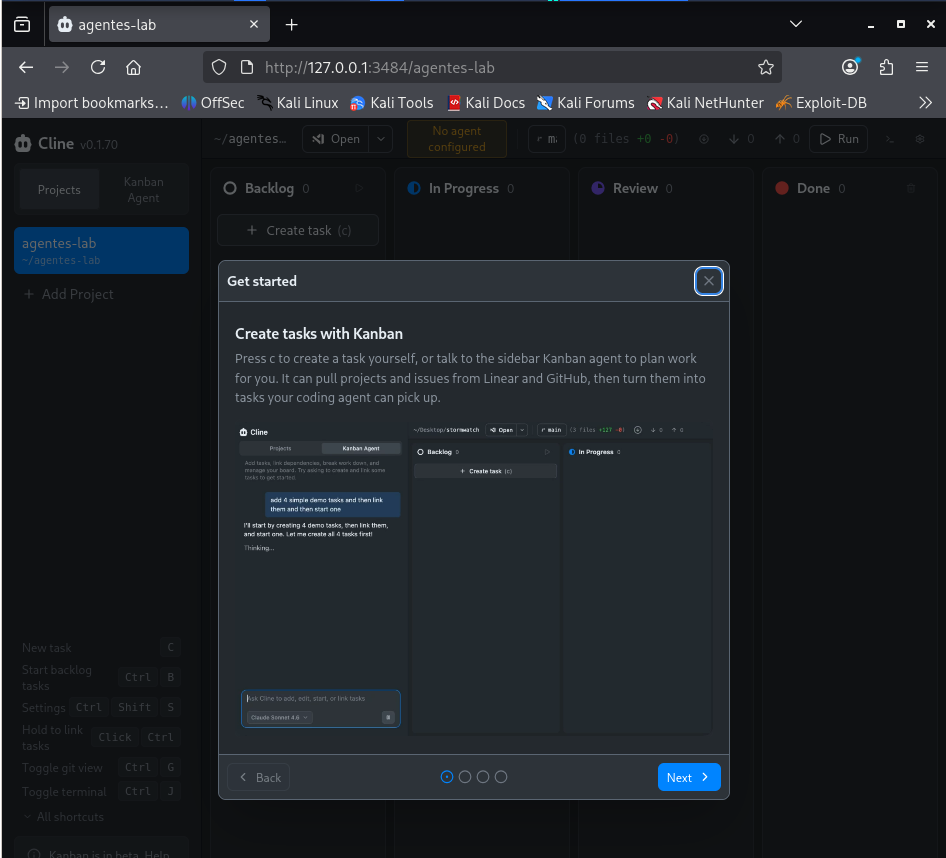
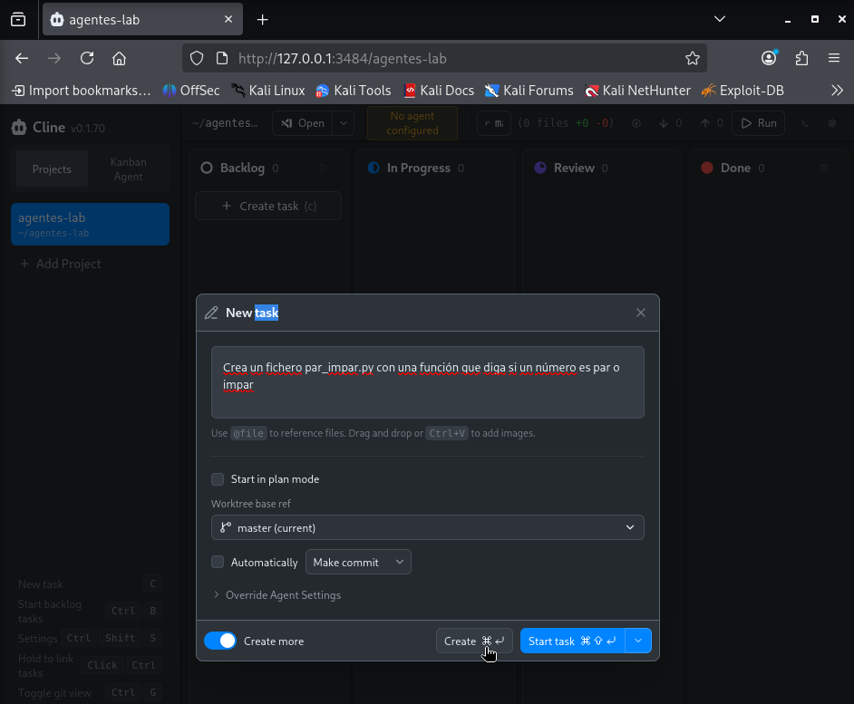
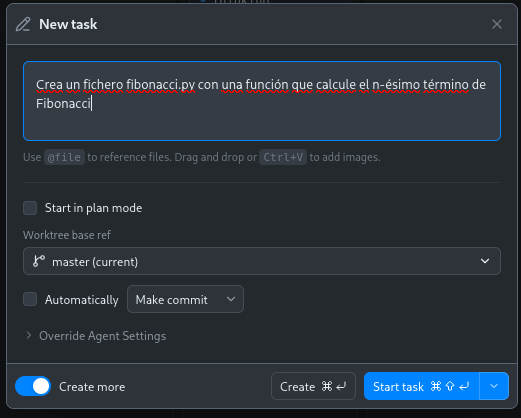
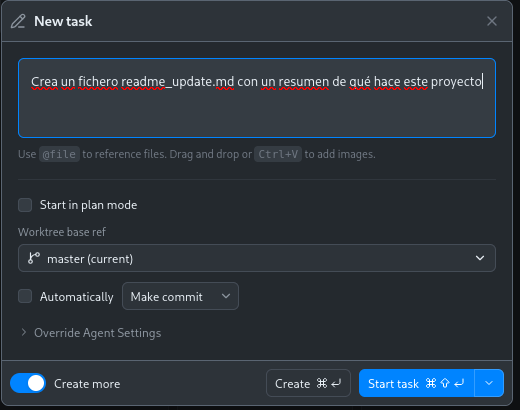
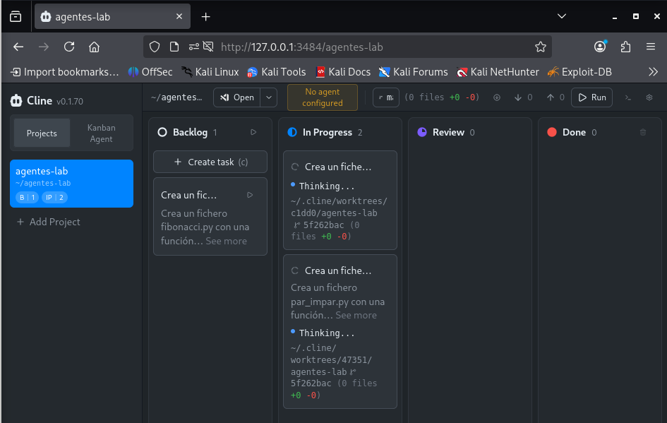
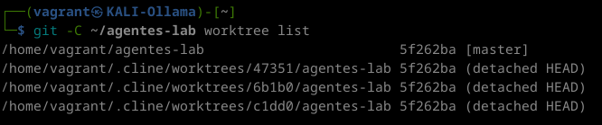

Práctica 3 — Axentes e multiaxentes
Práctica 3 — Axentes e multiaxentes con Ollama
Automatización (apéndice)
Escenario
Continuamos dentro da mesma VM KALI-Ollama da Práctica 1. Nesta práctica
descargarás tamén qwen2.5:3b en vez de llama3.2:3b. Esta práctica engade
só o necesario para demostrar, paso a paso, o que se explica no apuntamento:
que Ollama pode motorizar axentes de codificación reais, que se poden
lanzar varios á vez en paralelo, e que eses axentes tamén poden
colaborar encadeados nunha mesma tarefa.
Por que Qwen e non Llama para esta práctica
Non é anecdótico — hai unha razón real de deseño detrás:
- Foco de adestramento distinto: Meta deseñou Llama 3.2 nos tamaños pequenos (1B/3B) pensando en tarefas on-device coma resumir texto ou RAG, non en axentes que chaman ferramentas. Qwen2.5 adestrouse cun peso moito maior en código e function calling estruturado dende o principio, mesmo nos tamaños pequenos.
- Datos de benchmark que o confirman: en probas estándar de chamada a ferramentas (BFCL — Berkeley Function-Calling Leaderboard), modelos Llama por baixo de 2B adoitan colapsar arredor dun 38% de acerto, mentres que Qwen2.5 do mesmo rango de tamaño obtén resultados claramente mellores no mesmo tipo de proba.
- O que se comproba na propia práctica: Cline avisa de forma
xenérica para calquera modelo pequeno (tamén para
qwen2.5:3b), pero na prácticallama3.2:3bnin chega a xerar o ficheiro, mentres queqwen2.5:3bremata a tarefa (aínda que lento). Non é que Qwen sexa perfecto — é notablemente máis fiable ca Llama neste tipo de tarefa concreta, no mesmo tamaño.
Isto non quere dicir que Llama sexa "peor" en xeral: para conversa ou resumir texto vai ben. O problema é específico de tarefas con ferramentas, que é xustamente o que precisamos nesta práctica.
Obxectivo desta práctica
Non quedarnos na teoría de "isto é posible" — comprobar con exercicios concretos e verificables que (1) un axente real (non un simple chat) pode ler e modificar ficheiros dun proxecto, (2) varios axentes poden traballar en tarefas independentes ao mesmo tempo (paralelismo) e (3) varios axentes poden colaborar encadeados, construíndo cada un sobre o traballo do anterior.
Recordatorio: modelo, axente, subaxente e equipo
Estes conceptos explícanse na teoría
A diferenza entre modelo, axente, subaxente e equipo de axentes (co diagrama, exemplos concretos e un caso aplicado a un pentest web) está desenvolvida na teoría desta unidade: Modelos de IA locais con Ollama, na sección "Pódense crear axentes, subaxentes e equipos de axentes con Ollama?".
En resumo: o modelo pensa (só devolve texto), o axente (Cline)
decide e actúa coas súas ferramentas (nmap, editar ficheiros...), un
subaxente é un axente que outro crea para unha subtarefa acoutada, e un
equipo son varios axentes coordinados cara a un obxectivo común.
Nesta práctica verás tres desas formas en acción: un axente só (Paso 4), varios en paralelo nun taboleiro (Pasos 6-7) e un equipo que colabora encadeado (Paso 8).
Onde executar cada paso: SSH vs sesión gráfica
Executar un modelo de IA en CPU xa consome bastante RAM por si só. Se ademais tes aberta a sesión gráfica de XFCE (Xorg, escritorio, lightdm...), é doado esgotar os 4 GB orixinais da VM e entrar en swap thrashing (o sistema queda case conxelado intercambiando memoria con disco — o teclado deixa de responder).
Por iso, para esta práctica en concreto:
- Asegúrate de que o
Vagrantfilexa tenvb.memory = "6144"(ver Práctica 1) e faivagrant reloadse o cambiaches despois de crear a VM. - Os pasos en terminal (axente único no Paso 4 e o multiaxente colaborativo do Paso 8) podes facelos por SSH, sen abrir o escritorio, para aforrar a memoria que consomen Xorg e XFCE:
- O taboleiro Kanban (Pasos 5-7) ábrese nun navegador dentro da VM, así que eses pasos si precisan a sesión gráfica. Nese caso, pecha todo o que non necesites para deixarlle RAM ao modelo e a Cline.
Paso 1 — Instalar Node.js 22+ e Git
Cline require Node.js 22 ou superior. A versión que trae Kali por defecto en
apt adoita ser máis antiga, así que instalamos unha versión actual:
# Repositorio oficial de NodeSource (Node 22 LTS)
curl -fsSL https://deb.nodesource.com/setup_22.x | sudo bash -
sudo apt install -y nodejs git
# Verificar versións
node --version # debe amosar v22.x ou superior
npm --version
git --version
Paso 2 — Instalar Cline CLI
O instalador de Node.js do paso anterior configura npm para instalar
paquetes globais en /usr/lib/node_modules, que pertence a root. Para
evitar ter que usar sudo cada vez que instales algo con npm, cambia
primeiro o cartafol global a un que sexa teu:
mkdir -p ~/.npm-global
npm config set prefix '~/.npm-global'
echo 'export PATH=~/.npm-global/bin:$PATH' >> ~/.zshrc
source ~/.zshrc
Agora xa podes instalar sen sudo:
Erro EACCES: permission denied
Se xa executaches npm install -g cline antes de facer o cambio de
cartafol e che deu un erro de permisos (EACCES), non che quedou nada a
medio instalar — simplemente segue os pasos de enriba e volve executar
o npm install -g cline.
Paso 3 — Crear un proxecto de proba
Cline (e o seu modo Kanban) traballan sempre dentro dun repositorio git.
Primeiro uso de git nesta VM
Se é a primeira vez que usas git commit nesta VM, configura antes a
túa identidade (calquera valor abonda para esta práctica, non fai falla
que sexa real):
Creamos un pequeno proxecto con tres tarefas independentes entre si (condición necesaria para que teña sentido facelas en paralelo):
mkdir -p ~/agentes-lab && cd ~/agentes-lab
git init
echo "# Lab de axentes" > README.md
git add . && git commit -m "Proxecto inicial"
Paso 4 — Proba dun único axente
Antes de ir a varios á vez, descarga o modelo e comproba que un só axente funciona correctamente:
ollama launch cline --model qwen2.5:3b -- "Crea un fichero saludo.py que imprima 'Ola, HE!' por consola"
Cline pediche confirmación por ser un modelo pequeno
qwen2.5:3b é pequeno para tarefas de axente, así que ao lanzalo Cline
advirte e pide confirmación:
Escolle Launch anyway para continuar con ese modelo (é o que
queremos nesta práctica). Pick another model só é útil se tes
descargado outro modelo máis capaz co que probar.
É normal que tarde e que escriba amodo
Nunha VM sen GPU, o modelo xera a resposta token a token, en tempo real e con delay perceptible — verás o texto aparecer aos poucos, non de golpe. Non é que estea conxelado; é o ritmo real de inferencia en CPU. Espera con paciencia a que remate antes de dar por fallada a execución.
Por que o prompt vai en castelán, non en galego
Igual que na Práctica 1, se escribes a instrución en galego é probable que o modelo responda (ou comente o que fai) en portugués, xa que o galego non está entre os idiomas oficialmente soportados destes modelos pequenos. Por iso os prompts desta práctica van en castelán — é a opción fiable, non un descoido.
Verificación: comproba que o ficheiro se creou realmente e que o contido é o esperado:
Se ves o ficheiro creado e a saída correcta ao executalo, o axente funcionou de verdade (leu a instrución, escribiu código, e ese código é executable) — non foi só unha resposta de chat.
Paso 5 — Abrir o taboleiro Kanban (multiaxente)
Este paso precisa a sesión gráfica
A diferenza do Paso 4, o Kanban abre unha interface web no navegador
dentro da VM, así que aquí si necesitas a sesión gráfica de XFCE (non
vale só vagrant ssh). Inicia sesión no escritorio de Kali para seguir.
cd ~/agentes-lab
ollama launch cline --model qwen2.5:3b -- kanban
...
Cline Kanban running at http://127.0.0.1:3484/agentes-lab
...
Isto abre unha interface web no navegador (dentro da propia VM). Na
primeira execución pedirache escoller o cartafol do proxecto (~/agentes-lab)
e o axente a usar (Cline).

Paso 6 — Crear tres tarefas independentes e lanzalas á vez
No taboleiro, crea tres tarxetas de tarefa, unha por cada un destes encargos independentes (non dependen unhas das outras a propósito), en castelán polo mesmo motivo do Paso 4:
- "Crea un fichero
par_impar.pycon una función que diga si un número es par o impar"

- "Crea un fichero
fibonacci.pycon una función que calcule el n-ésimo término de Fibonacci"

- "Crea un fichero
readme_update.mdcon un resumen de qué hace este proyecto"

Preme "play" nas tres tarxetas sen esperar a que remate a anterior.

Vai ser lento — e iso tamén é parte da lección
Como xa vimos, dentro desta VM Ollama corre en CPU. Executar tres axentes en paralelo significa tres inferencias de IA competindo polo mesmo procesador, cada unha escribindo a súa resposta amodo e token a token — cada tarefa individual tardará máis do que tardaría soa. Isto é exactamente o trade-off real do multiaxente: gañas paralelismo de tarefas, non necesariamente velocidade total se o hardware é o límite.
Paso 7 — Verificar que realmente traballaron en paralelo
Cando remate (ou mentres traballan), comproba nun terminal á parte:
Resultado esperado: debes ver varias entradas de worktree distintas (unha por tarefa activa), non só a rama principal — é a proba técnica de que cada axente traballou no seu propio espazo illado, sen interferir cos outros.
Ollo co matiz: isto é paralelismo de axentes independentes, non colaboración. Cada axente ten o seu obxectivo e o seu worktree, e non se comunica cos demais nin comparte estado con eles. É unha das dúas caras do "multiaxente"; a outra —axentes que si colaboran entre si, ao estilo dos Subagents/Agent Teams do apuntamento— vémola no Paso 8.

Ao rematar todas, comproba que os tres ficheiros existen e son correctos:
cat ~/agentes-lab/par_impar.py
cat ~/agentes-lab/fibonacci.py
cat ~/agentes-lab/readme_update.md
python3 ~/agentes-lab/par_impar.py
python3 ~/agentes-lab/fibonacci.py
Paso 8 — Multiaxente colaborativo (axentes que traballan xuntos)
Nos pasos 6-7 os axentes eran independentes: cada un no seu worktree, sen saber nada dos outros. Iso é paralelismo, pero non colaboración. Agora imos ao outro caso: varios axentes que constrúen sobre o traballo do outro, encadeados nun pipeline clásico de desenvolvemento — desarrollador → tester → documentador — todos sobre o mesmo proxecto.
A diferenza clave respecto ao Paso 6 está en dúas cousas:
- Estado compartido: aquí NON usamos o Kanban (que illa cada tarefa nun worktree). Usamos a forma directa do Paso 4, que traballa sobre o cartafol do proxecto, para que cada axente vexa os ficheiros que deixou o anterior.
- Execución secuencial: lánzanse un tras outro, esperando a que remate cada un, porque o axente 2 precisa o que produciu o 1, e o 3 o que produciron os anteriores.
Traballa nun cartafol limpo para non mesturar cos ficheiros dos pasos previos:
Axente 1 — desarrollador. Crea o código base:
ollama launch cline --model qwen2.5:3b -- "Crea un archivo calculadora.py con cuatro funciones: sumar(a, b), restar(a, b), multiplicar(a, b) y dividir(a, b). La función dividir debe lanzar un ValueError si b es cero."
Axente 2 — tester. Le o que fixo o anterior e escribe as probas (fíxate en que o prompt lle pide ler o ficheiro existente — aí está a colaboración):
ollama launch cline --model qwen2.5:3b -- "Lee el archivo calculadora.py que ya existe en este proyecto y crea test_calculadora.py con pruebas unittest para cada una de sus funciones, incluyendo el caso en que dividir recibe un cero."
Axente 3 — documentador. Le o código e as probas e redacta a documentación:
ollama launch cline --model qwen2.5:3b -- "Lee calculadora.py y test_calculadora.py de este proyecto y crea un archivo USO.md que documente qué hace cada función y cómo ejecutar las pruebas."
Verificación: a proba de que houbo colaboración real é que as probas do axente 2 pasen contra o código do axente 1 (é dicir, que o tester entendese o que escribiu o desarrollador):
Se os tests pasan e o USO.md describe as funcións reais de calculadora.py,
os tres axentes coordináronse a través do estado compartido, partindo cada un
do traballo do anterior.
Colaboración por encadeamento vs. orquestración
Este é o xeito máis sinxelo e verificable de colaboración: un pipeline secuencial con traspaso (handoff) a través dos ficheiros do proxecto. Hai formas máis avanzadas —un axente "orquestrador" que reparte subtarefas a outros e recolle os resultados, como nos Agent Teams— pero requiren máis orquestración da que cabe nesta VM. A idea de fondo (uns axentes constrúen sobre o que fan outros) é a mesma que acabas de comprobar.
Cun modelo de 3B en CPU, sé claro nos prompts
A colaboración depende de que os axentes 2 e 3 lean ben o ficheiro anterior. Cun modelo pequeno iso non sempre sae á primeira: se un axente ignora o ficheiro existente ou inventa funcións que non están, reformula o prompt facéndoo máis explícito ("lee primero el archivo X y básate solo en sus funciones"). É a mesma limitación de fiabilidade xa vista, agora nun escenario con dependencias entre axentes.
Continúa con dous enfoques novos
- Práctica 4 — Crear un axente propio con Python: construír o bucle de ferramentas e comprobar os permisos desde o código.
- Práctica 5 — Equipos de axentes con CrewAI: coordinar roles e tarefas; distinguir proceso secuencial de xerárquico.
Peche da práctica
O que acabas de comprobar, en termos do apuntamento:
| No apuntamento dicíase... | E o comprobaches con... |
|---|---|
| Para actuar (crear ficheiros, executar) fai falla un axente; o modelo só devolve texto | Paso 4 — Cline (motor: qwen2.5:3b en Ollama) leu a instrución e creou saludo.py executable, non só texto de chat |
"ollama launch — conectar un modelo local como motor doutras ferramentas" |
Todos os pasos — Cline usando qwen2.5:3b como motor, sen conta de pago |
| "Multiaxente en paralelo (axentes independentes)" | Pasos 6-7 — tres axentes independentes, cada un no seu worktree illado, executados á vez: paralelismo, non colaboración |
| "subaxentes e equipos de axentes" — varios roles colaborando nunha mesma tarefa | Paso 8 — pipeline desarrollador → tester → documentador, onde cada axente le e constrúe sobre a saída do anterior |
Para ir máis alá
Se tes acceso á Práctica 2 (equipo
anfitrión con GPU), repite os pasos 5-8 alí cun modelo maior
(dolphin-llama3:8b) e compara canto máis rápido vai o mesmo exercicio con
GPU fronte a CPU.